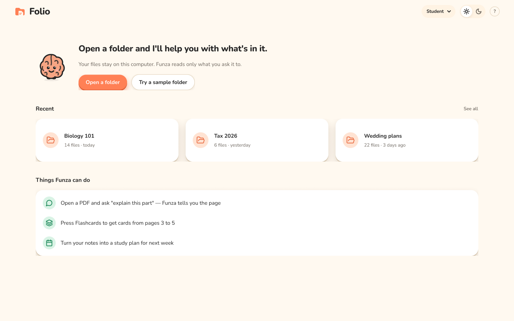
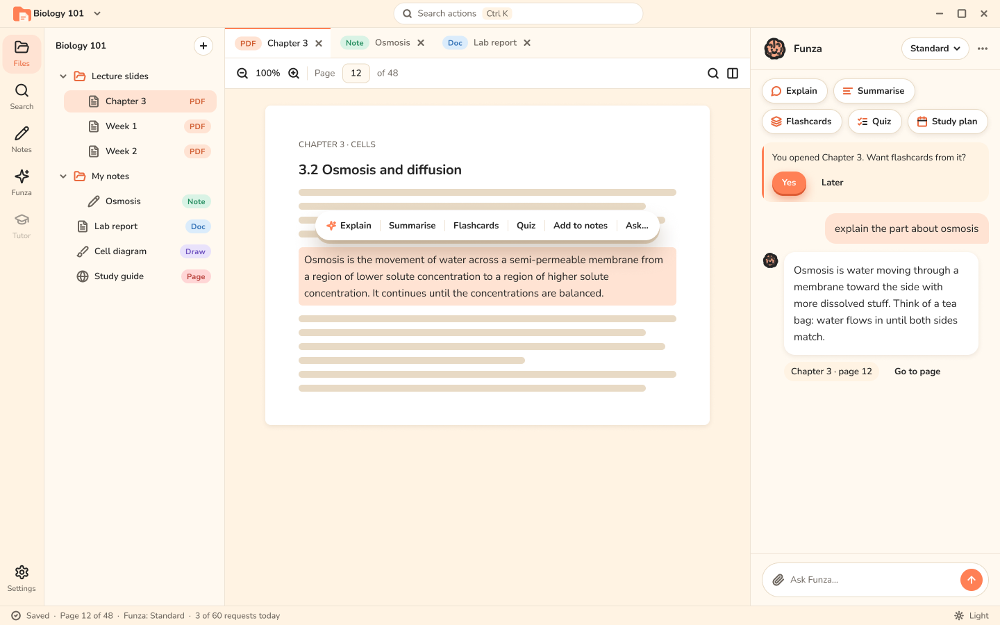
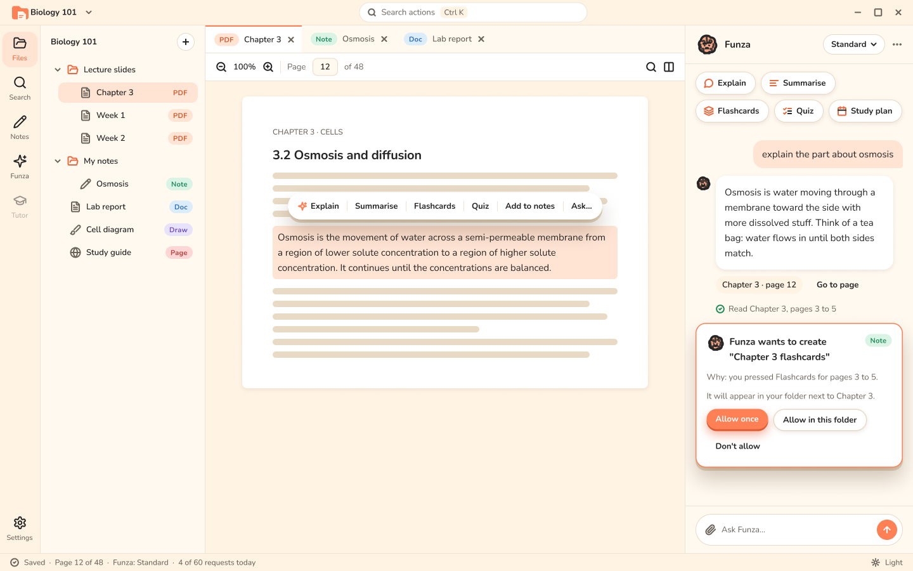
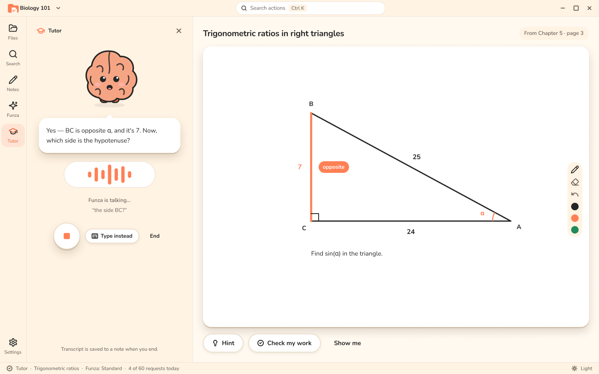

We're testing the app, not you. Try six short tasks in our clickable prototype, then tell us how it felt. Everything you say helps us make Folio easier to use.
Hi, I'm Funza! I live inside Folio and help you with the files in your folder.
Scan to open Folio
Best on a laptop or tablet. On a phone, turn it sideways.
__PROTO_URL__
What is Folio?
Folio is a desktop app for people who don't code. You open a folder from your computer and everything in it opens in one window: PDFs, documents, notes and drawings. Funza, the helper on the right, explains what you're reading in plain words, tells you which page the answer came from, and makes flashcards, quizzes or documents with one button. Funza always asks before it changes anything in your folder.
How this test works
1Open the prototypeScan the code above, or type the link. Folio opens on its first screen.
2Try six tasksPages 3 and 4. After each one, tick how it went. It's fine to get stuck.
3Tell us what you thinkPages 5 to 7. Hand the sheet back, or photograph or scan it and send it to us.
Before you start
Taking part is voluntary and you can stop at any time. You must be 18 or older. We don't need your name. Your answers are used only to improve Folio for our ENSE 400 capstone project and are never shared outside the team.
I am 18+ and agree to take part
Date
What you'll need
A screenA laptop is best. A tablet or phone works too.
A penTick the circles and boxes. Write as much or as little as you like.
About 10 minutesTasks take 5 minutes. The questions take 5 more.
Folio usability study · Aubin Chriss Izere and Chop Kur · Dr. Tim Maciag, ENSE 400Page 1
Folio usability studyWhat Folio does
What Folio does
A quick tour of the four things you'll try today. You don't need to remember any of this.

1Start from a folder
Open any folder on your computer. Folio shows your files with plain names and colour tags like PDFDocNoteDraw. No code and no file extensions.

2Funza explains, and shows the page
Select any part of a PDF and press Explain. Funza answers in plain words and shows the page it came from, so you can check it.

3One button for flashcards
Press Flashcards, pick the pages, and Funza makes the deck. Before it saves anything to your folder, it asks you first.

4Talk it through with the Tutor
Tap the mic and Funza talks you through a problem on the whiteboard, one question at a time. The bars move when Funza is listening or talking.
Two ways to use Folio
Student mode
For lecture PDFs, notes and exams.
ExplainSummariseFlashcardsQuizStudy plan
Everyday mode
For letters, forms, quotes and documents.
ExplainSummariseWrite a documentDraft a replyOrganise files
Good to know. This is a clickable prototype made in Figma, not the finished app. Funza's answers are written in advance, nothing is saved, and some buttons don't do anything yet. If you click something and nothing happens, that's useful for us: jot it down. You can switch between light and dark mode by clicking the bar at the very bottom of the workspace.